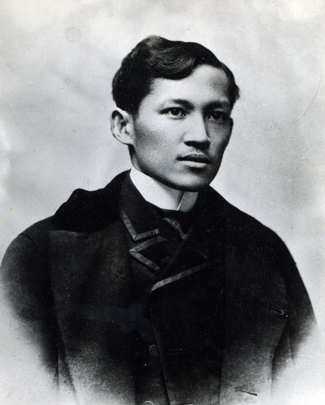

Dr. Jose P. Rizal
Dr. Jose P. Rizal is one of the most revered figures in Philippine history. He was a multifaceted intellectual and a political activist, best known for his political writings that inspired the Philippine revolution and ultimately led to his execution by the Spanish colonizers.
Timeline of Dr. Jose P. Rizal's Life
1848
José Rizal’s mom, Teodora Morales Alonso-Realonda y Quintos, and dad, Francisco Rizal-Mercado y Alejandra, marry on June 28th.
1861
On June 19th José Rizal is born to become the seventh child born to his parents. Three days later Rizal was christened with the name Jose Protasio Rizal-Mercado y Alonso-Realonda.
1870
José begins school under the instruction of Justiniano Aquin Cruz at just nine years of age.
1871
José continues his education under the instruction of Lucas Padua.
1872
Rizal is examined by those in charge of college entrance to St. Tomas University in Manila; he enters the school system as a scholar.
1875
Rizal enters the Ateneo as a boarder at just 14 years of age.
1876
At the age of 15, Rizal receives a Bachelor of Arts Degree from the Ateneo de Manila. He not only receives this degree, but receives it with the highest honors possible.
1877
In June José begins to go to school at St. Tomas University in Manila where he studies philosophy.
Writing Career
1877
In November Rizal writes a poem and receives recognition for his writing from the Royal Economic Society of Friends of the Country, also known as Amigos del Pals. The recognition comes in the form of a diploma of merit and honorable mention.
1878
In June Rizal decides to switch gears in his educational pursuits and transfers into the medical courses at St. Tomas University. During this time he also writes an additional two poems that win him further recognition.
1880
At the age of 19 Rizal writes another poem for a competition where he should have won first prize. However, he was not given this prize due to discrimination. In December Rizal produces his first Operetta called On the Banks of the Pasig.
1881
Rizal creates the commemorative medal in wax for the Royal Economic Society of Friends centennial celebration.
Emigrating
1882
In May Rizal gets money from his brother and travels secretly from Manila to Spain aboard a French ship and railroad entering Spain at the Port Bou. In June St. Tomas University realizes Rizal is nowhere to be found and threatens to take land away from his father who is a tenant even though his father has no idea of his whereabouts. June 15 Rizal makes his arrival in Barcelona and begins to study again in Madrid in October of that same year.
1886
Rizal receives a degree in medicine from the Central University of Madrid at the age of 23. He then becomes an assistant to Dr. L. de Wecker and visits many universities in Berlin, Leipzig, and Heidelberg in the country of Germany.
Fame... Then Death and Legacy
1887
Rizal finishes his first novel titled Noli Me Tangere while staying in Berlin. The novel offends Catholic officials and Rizal is deemed to be a troublemaker He then travels to Austria, Switzerland, and Italy. On July 3 Rizal leaves from Mersailles in Italy and arrives in Manila on August 5th. He travels to nearby areas escorted by a Spanish Lieutenant.
1888
In February Rizal leaves Spain and sets sail for Hong Kong in Japan. He continued to travel practice medicine and write.
1892
In August Rizal was detained aboard a ship traveling back to Spain. Rizal was charged with treason, sedition, and the formation of illegal societies. He was sent to an island and held. He taught for four years while being held. He met a girl named Josephine Bracken who he wanted to marry but the church refused to give him a license to marry. He penned his last piece of writing called My Last Farewell and wrote an address to Filipino insurgents to lay down their arms against the Spanish. The address was never made public, but was added to the list of charges against him.
1896
His request to go to Cuba was approved. On the way to Cuba he was arrested and charged with conspiracy and sedition. On December 27 he was condemned to death in a Spanish court On December 30th he was permitted to marry Josephine two hours before he was shot by a firing squad. He was buried in a secret grave.
1912
On December 30th the ashes of Rizal were transferred to the Rizal Mausoleum and December 30th is declared a national holiday in honor of his memory. José Rizal's life and works were critical to those from the Philippines who were looking for an end to Spanish colonization.
8 MOST IMPORTANT WORKS OF DR. JOSE P. RIZAL
GOODBYE TO LEONOR

TO THE YOUNG WOMEN OF MALOLOS
KUNDIMAN
JUNTO AL PASIG

Noli Me Tangere

EL FILIBUSTERISMO

MI ULTIMO ADIOS
Links are ordered by appearance (top-to-bottom, left-to-right)
Rizal Park Manila
José Rizal
José Rizal Philippine National Hero and Ophthalmologist
José Rizal Life Timeline
The 8 Most Important Literary Works by Jose Rizal
Reaching the Next Generation with the National Youth Council
Leonor Rivera: The Tragic Story of Jose Rizal's Most Significant Love and Heartbreak
The 20 Brave Women of Malolos
Kundiman
Please Watch: A Closer Look at Jose Rizal’s Junto al Pasig by UPLB SAMASINING
NOLI ME TANGERE
EL FILIBUSTERISMO
Jose Rizal, writing his Mi Ultimo Adios, Diorama of the Martyrdom of Jose Rizal, Rizal Park (Luneta), Manila, Philippines